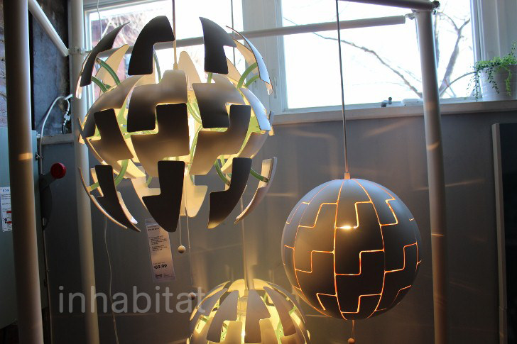
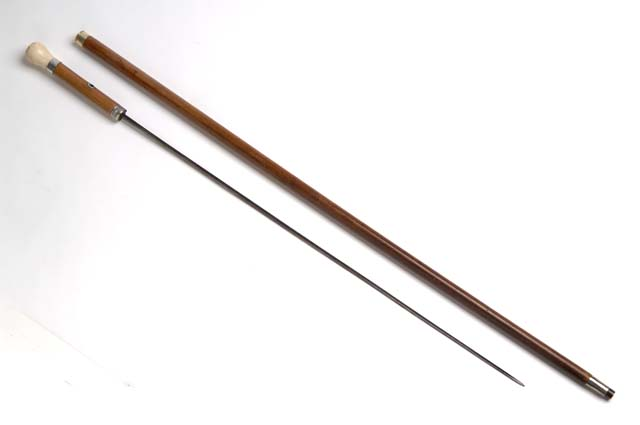

{kind=link}
{kind=link}
{kind=link}
{kind=link}
{kind=link}
{kind=link}
{kind=link}
{kind=link}
{kind=link}
{kind=link}
Object #53: Bags straps
Reconfiguration and/or Purpose: Adjust strap length to fit user

Credits: CollegeDegrees360,
Source: https://www.flickr.com/photos/83633410@N07/7658317110/in/photostream/,
Last retrieved 17-Mar-17
Submitted to CHI 2018
A link for full paper will appear
December 8, 2015 - August 15, 2017
Missing objects/IDs are envisionned (non-existing) objects that are not part of this analysis
Reconfiguration and/or Purpose: Each seat (sitting cushion) can be detached and put on a floor as a chair and footstool.
Credits: Rattan Garden Furniture from Moda Furnishings,
Source: https://www.youtube.com/watch?v=FjZjFI0lTS8,
Last retrieved 17-Mar-17
Reconfiguration and/or Purpose: The table legs can be extended, so that the table fit the user's height
Reconfiguration and/or Purpose: Adapt the space between shelves to accommodate different foods
Credits: A study participant,
Reconfiguration and/or Purpose: The fabric deforms to adapt to the things carried inside
Credits: Alicia Rosello Gene,
Source: https://www.flickr.com/photos/malisia/2712832473,
Last retrieved 17-Mar-17
Reconfiguration and/or Purpose: Enlarge volume to carry more object
Source: http://www.ifitshipitshere.com/wp-content/uploads/2015/04/fugu-luggage-hero-IIHIH1.jpg
(image not included due to copyright issue)
Last retrieved 17-Mar-17
Reconfiguration and/or Purpose: A tripod which has legs consisting of rollable balls (similarly to object #15)
Credits: Evan-Amos,
Source: https://upload.wikimedia.org/wikipedia/commons/5/56/Gorillapod-with-camera.jpg,
Last retrieved 17-Mar-17
Reconfiguration and/or Purpose: The angle of canopy is adjusted to block sunlight
Credits: Max Pixel,
Source: http://maxpixel.freegreatpicture.com/Tuscany-Cottages-vacation-Rentals-Pool-Sunbeds-1456082,
Last retrieved 17-Mar-17
Reconfiguration and/or Purpose: Change shape of lamp shadows to change light quality (see in https://www.youtube.com/watch?v=ldu4oy9MyQ8)
Credits: Inhabitat,
Source: https://www.flickr.com/photos/inhabitat/13389277485,
Last retrieved 17-Mar-17
Reconfiguration and/or Purpose: The canopy on the window is rolled out and fixed using sticks to block the sunshine. It is rolled in to protect from wind and rain.
Credits: Lilsarahp,
Source: https://en.wikipedia.org/wiki/Awning#/media/File:Ivoryawningl.jpg,
Last retrieved 17-Mar-17
Reconfiguration and/or Purpose: Change orientation to enlight desired space
Credits: A study participant,
Reconfiguration and/or Purpose: Open/close the top of tent to change porosity to cool when it is hot or to give light in tent or to make opaque when sleep
Credits: Michael McCullough,
Source: https://www.flickr.com/photos/ex_magician/5820949283,
Last retrieved 17-Mar-17
Reconfiguration and/or Purpose: Slide one layer to change porosity for ventilation or light, as in Gaudi's design of wooden window
Source: http://1.bp.blogspot.com/-5Yk2KxySjp8/UauqULjrtnI/AAAAAAAAD7o/6SX_GZ5njfo/s1600/IMG_4409.JPG
(image not included due to copyright issue)
Last retrieved 17-Mar-17
Reconfiguration and/or Purpose: Extend or shrink and orient to change light quality
Credits: Tomwsulcer,
Last retrieved 17-Mar-17
Reconfiguration and/or Purpose: Move strings to animate the puppet
Credits: SoHome Jacaranda Lilau,
Source: https://en.wikipedia.org/wiki/File:Marionnette.jpg,
Last retrieved 17-Mar-17
Reconfiguration and/or Purpose: Rotate antena in 2D to capture signal
Credits: SparkFun Electronics,
Source: https://www.flickr.com/photos/sparkfun/29013021194/,
Last retrieved 17-Mar-17
Reconfiguration and/or Purpose: Shrink/extend antenna to capture signal
Credits: SparkFun Electronics,
Source: https://www.flickr.com/photos/sparkfun/29013021194/,
Last retrieved 17-Mar-17
Reconfiguration and/or Purpose: Roll to carry and unroll to type
Source: http://www.armadasilicone.com/uploadfile/product/big/Silicone-Keyboards-287.jpg
(image not included due to copyright issue)
Last retrieved 17-Mar-17
Reconfiguration and/or Purpose: Combine brush and handle inward to carry; Combine outward to brush teeth
Credits: ,
Source: https://pixabay.com/en/comb-tooth-brush-soap-towel-263767/,
Last retrieved 17-Mar-17
Reconfiguration and/or Purpose: Fold to carry and unfold to brush hair
Credits: the authors,
Reconfiguration and/or Purpose: Fold to fit in a bag or pocket and unfold to see information
Reconfiguration and/or Purpose: Fold to carry or store and unfold to make wind
Credits: minshee93,
Source: https://pixabay.com/en/fan-plum-bamboo-and-blooming-1571569/,
Last retrieved 23-Mar-17
Reconfiguration and/or Purpose: Fold to carry or store and unfold to type
Credits: Robert Whyte,
Source: https://www.flickr.com/photos/robert-whyte/8386456509,
Last retrieved 17-Mar-17
Reconfiguration and/or Purpose: A lunch box consists of several containers for rice and side dishes. Combine to carry and uncombine and open to eat.
Reconfiguration and/or Purpose: The blade or container can be changed according to the purpose (mix; cut; different ingredient; etc.)
Credits: Paul Goyette,
Source: https://www.flickr.com/photos/pgoyette/101146396/,
Last retrieved 17-Mar-17
Reconfiguration and/or Purpose: Unfold to climb and fold to store
Credits: INCOSV,
Source: https://upload.wikimedia.org/wikipedia/commons/c/c2/Inco_Ladder.jpg,
Last retrieved 17-Mar-17
Reconfiguration and/or Purpose: Open/close to connect/disconnect different objects fast
Credits: Polyparadigm,
Source: https://commons.wikimedia.org/wiki/File:Cheap_carabiners.JPG,
Last retrieved 17-Mar-17
Reconfiguration and/or Purpose: Fold to focus on one area and/or to make it small (to carry or store), unfold to view whole area
Credits: Nikolaj,
Source: http://wiki.openstreetmap.org/wiki/File:USE-IT_Copenhagen_paper_map.jpg,
Last retrieved 17-Mar-17
Reconfiguration and/or Purpose: Roll up to work (and prevent damaging) or for style; and roll down to keep warm or for style
Credits: May Lee,
Source: https://www.flickr.com/photos/maylee213/7207228692/,
Last retrieved 17-Mar-17
Reconfiguration and/or Purpose: The straps can be detached when users want to wear shoulderless tops and attached for better comfort
Credits: the authors,
Reconfiguration and/or Purpose: Extend to take selfies and shrink to carry
Credits: ,
Source: http://maxpixel.freegreatpicture.com/Selfie-Romantic-Couple-Photography-Dragooste-1363974,
Last retrieved 17-Mar-17
Reconfiguration and/or Purpose: Combine to hide the sword in the cane, uncombine to fight
Credits: Minnesota Historical Society,
Source: https://www.flickr.com/photos/7409083@N03/5053825845,
Last retrieved 17-Mar-17
Reconfiguration and/or Purpose: Adjust strap length to fit user
Credits: CollegeDegrees360,
Source: https://www.flickr.com/photos/83633410@N07/7658317110/in/photostream/,
Last retrieved 17-Mar-17
Reconfiguration and/or Purpose: Adjust strap length to fit user
Credits: David Schexnaydre,
Source: https://www.flickr.com/photos/dschex/3264401289,
Last retrieved 17-Mar-17
Reconfiguration and/or Purpose: Adjust length to fit user
Credits: Robert Sheie,
Source: https://www.flickr.com/photos/85546319@N04/9114797415,
Last retrieved 17-Mar-17
Reconfiguration and/or Purpose: Zip/unzip to shrink/extend and adjust to user's height
Credits: the authors,
Reconfiguration and/or Purpose: Extend/shrink to adapt to the height of rider
Credits: ,
Source: http://maxpixel.freegreatpicture.com/Saddle-Mountain-Bike-Bike-661787,
Last retrieved 17-Mar-17
Reconfiguration and/or Purpose: Adjust height to adapt to user
Credits: Kare_Products,
Source: https://www.flickr.com/photos/ergonomic_office/3604453020,
Last retrieved 20-Mar-17
Reconfiguration and/or Purpose: When cleaning the floor, extend the length to fit the cleaning person. Shrink to store.
Credits: ,
Source: https://pixabay.com/en/vacuum-cleaner-suck-carpet-clean-1605068/,
Last retrieved 17-Mar-17
Reconfiguration and/or Purpose: Unfold to sit, fold to store. Adapt orientation of backrest.
Credits: ,
Source: https://pixabay.com/en/holiday-summer-sun-sun-loungers-2109648/,
Last retrieved 17-Mar-17
Reconfiguration and/or Purpose: Combine to make poles longer and support a tent
Credits: chaoticandrandom,
Source: http://www.instructables.com/id/How-to-repair-tent-pole-elastic-cord-Re-thread-/,
Last retrieved 17-Mar-17
Reconfiguration and/or Purpose: Fold to carry or store and unfold not to get wet from the rain
Credits: congerdesign,
Source: https://pixabay.com/en/umbrella-sky-screen-colorful-fly-846185/,
Last retrieved 17-Mar-17
Reconfiguration and/or Purpose: The tablet can be attached to the keyboard so that the tablet can be vertically fixed and have input from the keyboard. It is detached when the keyboard is not useful.
Credits: Dinominant,
Source: https://en.wikipedia.org/wiki/File:Asus_Transformer_Pad_TF701T_Tablet_and_Keyboard_Dock.png,
Last retrieved 17-Mar-17
Reconfiguration and/or Purpose: By attaching different heads, users can make different types of pasta
Credits: Magic Madzik,
Source: https://www.flickr.com/photos/cefeida/4175435434/,
Last retrieved 17-Mar-17
Reconfiguration and/or Purpose: The suction head can be changed to adapt to the area to be cleaned (carpet, baseboard, wooden floor, etc.)
Credits: Markus Schweiss,
Source: https://de.wikipedia.org/wiki/Datei:Staubsauger_Zubehoer.jpg,
Last retrieved 17-Mar-17
Reconfiguration and/or Purpose: The seat part can be changed depending on the user needs (with a back; with neck back; with armrest; etc.)
Source: http://www.gilmat.fr/images/f_secretariat/siege-secretariat-gana.jpg
(image not included due to copyright issue)
Last retrieved 17-Mar-17
Reconfiguration and/or Purpose: Change state to swim or drink, make ice rink or cool, cook faster

Credits: 256417, Mr. Johnson - The Ruiner, Myerge,
Source: https://pixabay.com/en/kitchen-cook-pots-cooking-pot-345707/,
https://www.flickr.com/photos/47269776@N07/6125275073,
https://en.wikipedia.org/wiki/Bra_ov_Olympic_Ice_Rink#/media/File:Bra_ov_Olympic_Ice_Rink.jpg,
Last retrieved 20-Mar-17
Reconfiguration and/or Purpose: Rotate to play

Credits: William Warby,
Source: https://commons.wikimedia.org/wiki/File:Rubiks_Cube_(11913436786).jpg,
Last retrieved 20-Mar-17
Reconfiguration and/or Purpose: Combine to play
Credits: ,
Source: http://maxpixel.freegreatpicture.com/Lego-Blocks-Play-Lego-Building-Blocks-Toys-1696427,
Last retrieved 20-Mar-17
Reconfiguration and/or Purpose: Extend/shrink to play
Credits: BeaLeiderman,
Source: https://www.flickr.com/photos/cantorbea/6911931428,
Last retrieved 20-Mar-17
Reconfiguration and/or Purpose: Change shape to play (see https://en.wikipedia.org/wiki/Rubik%27s_Magic)
Credits: Husky,
Source: https://commons.wikimedia.org/wiki/File:Rubiksmagic.jpg,
https://commons.wikimedia.org/wiki/File:Rubiksmagic_solved.jpg,
Last retrieved 20-Mar-17
Reconfiguration and/or Purpose: Deform a long balloon to play
Credits: GregMcMahan,
Source: https://pixabay.com/en/balloon-sculpture-flower-fun-child-1051720/,
https://pixabay.com/en/balloon-sculpture-dog-fun-child-1051718/,
Last retrieved 20-Mar-17
Reconfiguration and/or Purpose: Inflate a balloon to play
Credits: ThaneKeller, Complete fanatic,
Source: https://pixabay.com/en/balloons-crafts-celebration-party-960892/,
https://en.wikipedia.org/wiki/File:InflatableBalloons.jpg,
Last retrieved 20-Mar-17
Reconfiguration and/or Purpose: A set of wooden game boards and a box to contain tokens and pieces. Uncombine to play a board game such as chess. Combine to stack several board and the box to store them.
Source: https://sc01.alicdn.com/kf/HTB1MugKHXXXXXcHXpXXq6xXFXXXL/79894/HTB1MugKHXXXXXcHXpXXq6xXFXXXL.jpg
(image not included due to copyright issue)
Last retrieved 20-Mar-17
Reconfiguration and/or Purpose: Inflate to protect the driver in case of an accident. Desinflate to store.

Credits: Pineapple fez,
Source: https://de.wikipedia.org/wiki/Airbag#/media/File:Suzuki_alto_body2_-_AIMS.JPG,
Last retrieved 20-Mar-17
Reconfiguration and/or Purpose: Unfold to put more things on the table, fold to save space
Credits: Gleb Dolgich,
Source: https://www.flickr.com/photos/glebd/8439589566,
Last retrieved 20-Mar-17
Reconfiguration and/or Purpose: Each part of a bike can be replaced (wheels; pedals; chain; basket; saddle; etc.)
Source: https://i1.wp.com/www.radiusbike.com/wp-content/uploads/2014/10/bicycle_assembly.png
(image not included due to copyright issue)
Last retrieved 22-Mar-17
Reconfiguration and/or Purpose: Flip table to change from pool playing to dinning
Source: https://s-media-cache-ak0.pinimg.com/564x/88/63/90/8863904c59339d17f93c90ee6306de11.jpg
(image not included due to copyright issue)
Last retrieved 22-Mar-17
Reconfiguration and/or Purpose: Combining different head enables different utensils (fork/knife/spoon, potato peeler/knife, etc.)
Source: https://www.geekalerts.com/u/chewdriver-fork-knife-spoon.jpg
(image not included due to copyright issue)
Last retrieved 22-Mar-17
Reconfiguration and/or Purpose: The eight piece weapons accessory package includes two throwing stars hidden in the hand guard, two stabbing or cutting knives tucked into the scabbard near the hand guard, and when you pull the end off the scabbard it reveals a blunt battle tool that works like a flat kubotan, and a flat pointed knife for stabbing
Source: https://www.karatemart.com/images/products/large/ultimate-ninja-warrior-sword.jpg
(image not included due to copyright issue)
Last retrieved 22-Mar-17
Reconfiguration and/or Purpose: Combine to store, uncombine to make and drink tea
Credits: Counselling,
Source: https://pixabay.com/en/teapot-winter-cup-tea-pink-574027/,
Last retrieved 22-Mar-17
Reconfiguration and/or Purpose: Unfold to play pool and fold to store
Source: http://www.mercuryleisure.co.uk/images/folding_pool.gif
(image not included due to copyright issue)
Last retrieved 22-Mar-17
Reconfiguration and/or Purpose: Fold to watch TV and unfold to sleep
Credits: Modern Miami Furniture,
Source: https://www.flickr.com/photos/117019363@N07/13716970943,
Last retrieved 22-Mar-17
Reconfiguration and/or Purpose: Extend/shrink to see farther/closer

Credits: Ryan Wick,
Source: https://www.flickr.com/photos/ryanwick/3461850112,
Last retrieved 22-Mar-17
Reconfiguration and/or Purpose: The chair can be folded to be stored
Credits: sailko,
Source: https://fr.wikipedia.org/wiki/Fichier:Ngv_design,_giancarlo_piretti,_plia_folding_chair,_1969_01.JPG,
Last retrieved 22-Mar-17
Reconfiguration and/or Purpose: Uncombine the seat part to store things inside the box and combine the seat part to sit on it.
Credits: A study participant,
Reconfiguration and/or Purpose: Fold to store or to carry with strap and unfold to ride
Credits: Dahon North America Inc.,
Source: https://commons.wikimedia.org/wiki/File:Dahon_Jifo_16_Folding_Bike.jpg,
Last retrieved 22-Mar-17
Reconfiguration and/or Purpose: Fold to carry or store and unfold to get more drying surface
Credits: bykst,
Source: https://pixabay.com/en/laundry-dry-clothes-drying-rack-706621/,
Last retrieved 22-Mar-17
Reconfiguration and/or Purpose: Fold to store and unfold to fill with and carry groceries
Credits: violetta,
Source: https://pixabay.com/en/shopping-cart-trolley-purchasing-169267/,
Last retrieved 22-Mar-17
Reconfiguration and/or Purpose: Fold to carry and unfold to sleep
Credits: Topbossagent4534,
Source: https://commons.wikimedia.org/wiki/File:Topboss_Plastic_2343423_20131123154711_71466.jpg,
Last retrieved 22-Mar-17
Reconfiguration and/or Purpose: Slide out (pull) to put/get objects in the drawer and slide in (push) to put drawer back
Credits: Yasuo Kida,
Source: https://www.flickr.com/photos/kidayasuo/6610111965/,
Last retrieved 22-Mar-17
Reconfiguration and/or Purpose: Fold to carry or store and unfold to cover
Credits: Your Best Digs,
Source: https://www.flickr.com/photos/143676616@N05/31819409222,
Last retrieved 22-Mar-17
Reconfiguration and/or Purpose: Fold to carry or store and unfold to read
Credits: Unsplash,
Source: https://pixabay.com/en/book-bible-scripture-open-book-1210030/,
Last retrieved 22-Mar-17
Reconfiguration and/or Purpose: Fold to carry or store document and unfold to retrieve and read documents
Credits: Jin Zan,
Source: https://commons.wikimedia.org/wiki/File:Yellow_folder.JPG,
Last retrieved 22-Mar-17
Reconfiguration and/or Purpose: Fold to carry or store and unfold to ride
Source: http://www.xootr.com/graphics/scooters/accessories/foldedXootrWithStrap.jpg
(image not included due to copyright issue)
Last retrieved 22-Mar-17
Reconfiguration and/or Purpose: Change orientation to adjust stability and turn angle
(image not included due to copyright issue)
Last retrieved 22-Mar-17
Reconfiguration and/or Purpose: Extend or shrink to tune the sound
Credits: jeongsunyun,
Source: https://pixabay.com/en/flute-music-instrument-played-wind-893911/,
Last retrieved 22-Mar-17
Reconfiguration and/or Purpose: The accordion part can be folded and the opposite part can be unfolded when a tram makes a turn
Credits: Hunyadym ,
Source: https://en.wikipedia.org/wiki/Tram#/media/File:Combino_Supra_2036_in_Budapest.JPG,
Last retrieved 22-Mar-17
Reconfiguration and/or Purpose: Unfold its legs to iron and fold them to store and carry
Credits: Frank C. MŸller,
Source: https://commons.wikimedia.org/wiki/File:Buegelbrett_fcm.jpg,
Last retrieved 22-Mar-17
Reconfiguration and/or Purpose: Unfold to use different tools: knife, wine opener, saw, etc.

Credits: Jonas Bergsten,
Source: https://commons.wikimedia.org/wiki/File:Swiss_army_knife_open_20050612_(cropped).jpg,
Last retrieved 22-Mar-17
Reconfiguration and/or Purpose: Fold to travel and unfold to brush teeth
Source: https://www.containerstore.com/catalogimages/180657/10054683FoldingToothbrushWmicroban_x.jpg
(image not included due to copyright issue)
Last retrieved 22-Mar-17
Reconfiguration and/or Purpose: Slide out to make it longer
Credits: markus53,
Source: https://pixabay.com/en/ladder-fire-extendable-ladder-354620/,
Last retrieved 22-Mar-17
Reconfiguration and/or Purpose: Deform to play or make shape for any purpose
Credits: Ben_Kerckx, elkimmelito, Unsplash,
Source: https://pixabay.com/en/children-sand-castle-boy-girl-902195/,
https://pixabay.com/en/children-play-dough-play-2002917/,
https://pixabay.com/en/clay-hands-sculpting-art-690404/,
Last retrieved 20-Mar-17
{kind=link}
{kind=link}
{kind=link}
{kind=link}
.jpg){kind=link}
{kind=link}
{kind=link}
{kind=link}
{kind=link}
{kind=link}
{kind=link}
{kind=link}
{kind=link}
{kind=link}
{kind=link}
{kind=link}
{kind=link}
{kind=link}
{kind=link}
{kind=link}
{kind=link}
{kind=link}
{kind=link}
.jpg){kind=link}
{kind=link}